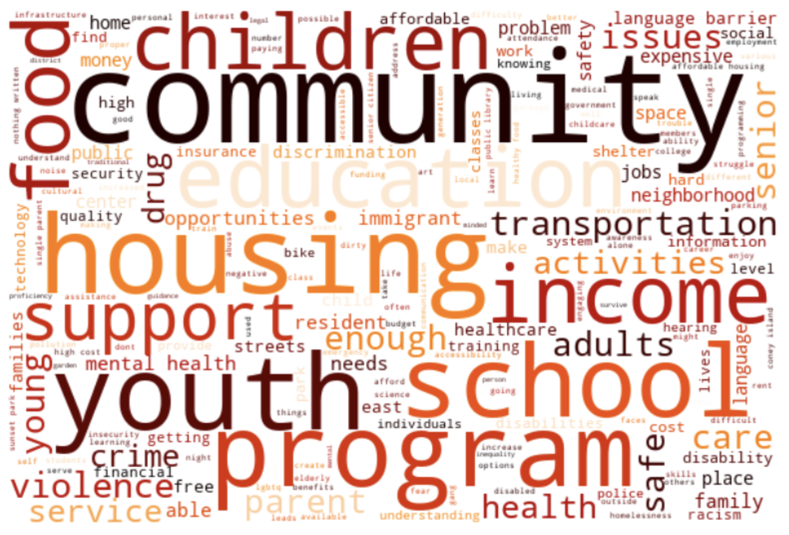
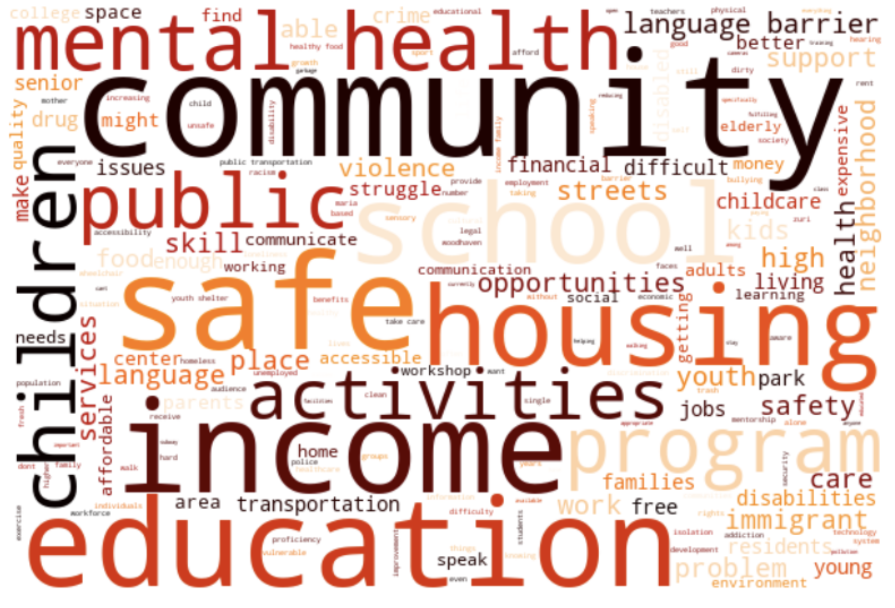
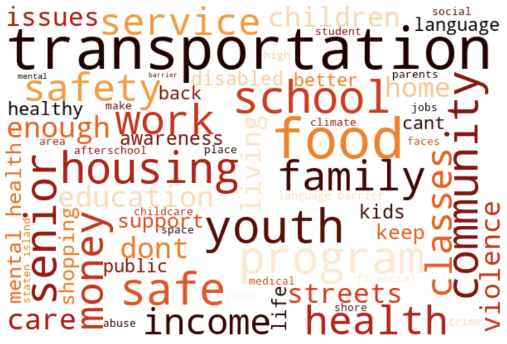

The People's Money (2023-2024)
The People’s Money Initiative is a citywide participatory budgeting process run by the NYC Civic Engagement
Commission. Until June 12, 2024, New York City residents ages 11 and older, regardless of immigration status,
could vote on how to spend a portion of the city budget to address community needs. Each resident voted on
projects that were specific to their borough.
Voting has now concluded, and budget ideas are in process of evaluation.
Scroll down to engage with submitted ideas and learn about borough-specific trends.
1944 total ideas submitted in New York City. . .
. . . across 8 different impact areas
374
Social Services and Accessibility
185
Environment and Public Space
109
Workforce Development
Your Ideas, On a Map
Wordcloud Creation
The following wordclouds display the most popular words used when submitting ideas, separated by
boroughs. The
larger the word, the more frequently it was used.
Click to enlarge images
Manhattan

Brooklyn

Queens

Staten Island
Bronx
Created in collaboration with the Milstein Program in Technology and Humanity at Cornell University